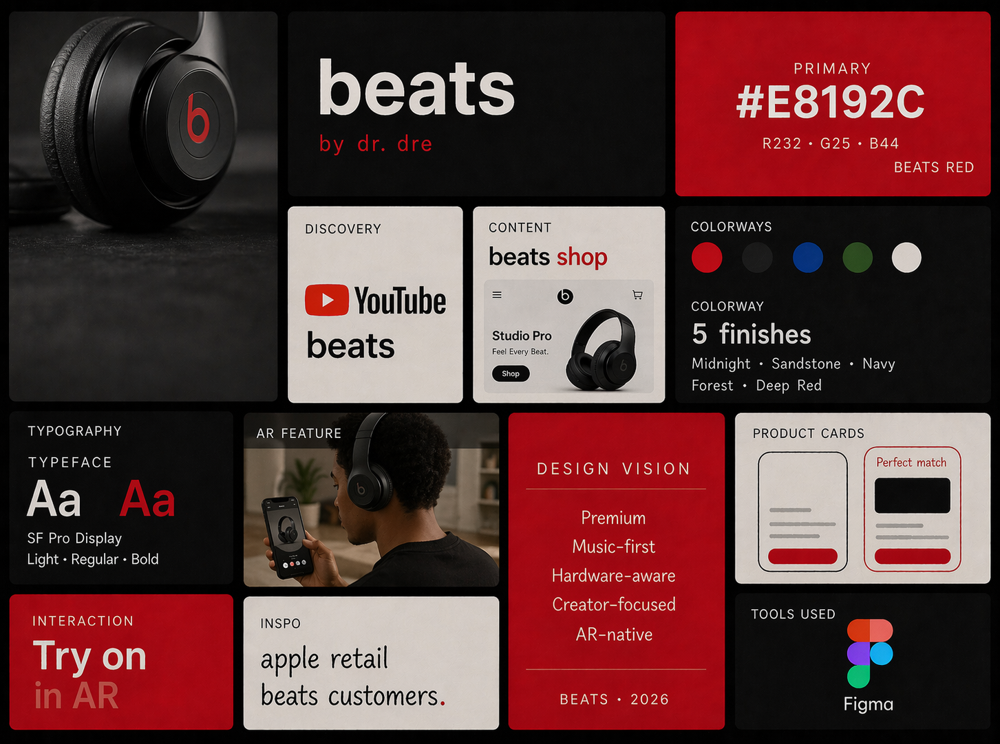
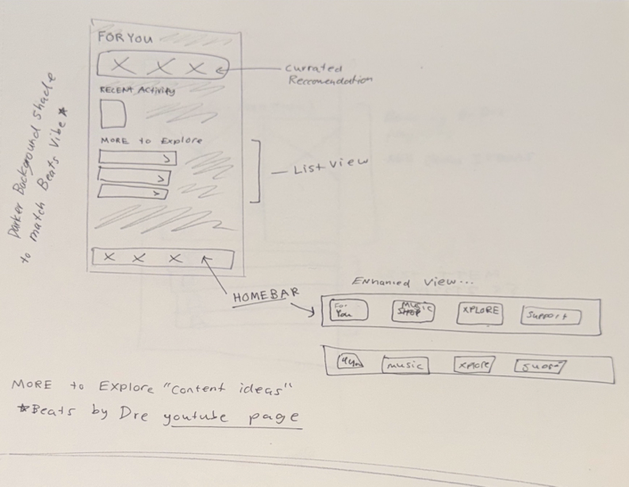
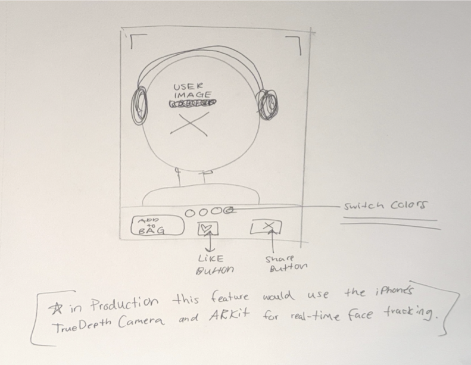
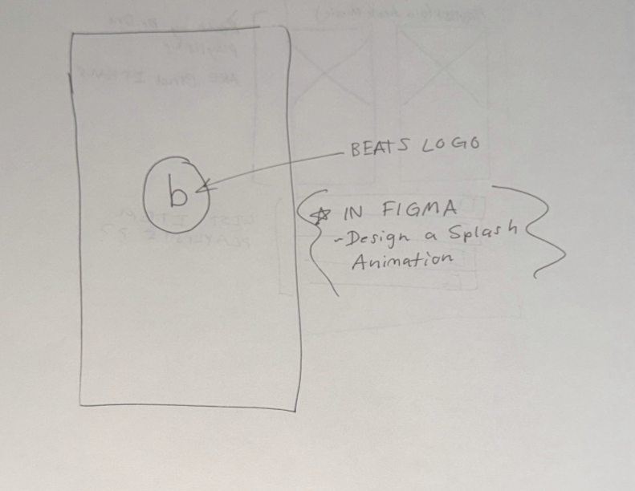
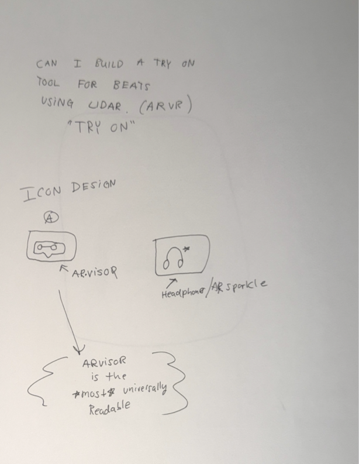

Concept Case Design
Overview
Beats makes some of the most recognizable audio products in the world, but the mobile experience hasn't matched the premium feel of the hardware. This concept imagines a native Beats app where users can discover music and content curated by Beats, shop products seamlessly, and use an AR-powered try-on feature that recommends the right headphone based on their face shape and personal style. As a musician myself, I designed this from the inside out — starting with what a Beats user actually wants from their phone.
Inspiration
The visual direction came directly from the hardware — the deep blacks, the Beats red, the clean minimal forms of the Studio Pro. Every screen decision was made asking the same question: does this feel like it belongs in the same world as a $349 pair of headphones? The AR try-on feature was inspired by the gap between seeing a product online and committing to buying it — a problem every headphone buyer faces.

Early Sketches
I sketched out a few concepts on paper to nail down the information hierarchy of each page.




Experience Direction
Many Beats users aren't aware of the depth of curated playlists available within Apple Music. This creates a disconnect between the product they're wearing and the broader listening experience it's designed for. I explored ways to surface these playlists more intentionally within the interface — bringing discovery forward and reinforcing the connection between hardware, content, and identity.
Selecting headphones is both a functional and personal decision, yet users often lack a way to visualize fit and style before purchasing. This concept introduces an AR try-on experience that brings Beats products into the user's environment, paired with a quick preference-based quiz that surfaces tailored recommendations. Together, this creates a more confident and personalized path to purchase. This shifts the experience from browsing products to discovering the right one.
The experience should feel expressive and premium, not just functional.
The interface should feel connected to Beats products, not separate from them.
Immersion works best when hierarchy is simplified and intentional.
Reflection
Beats has some of the most recognizable products in the world, but there's no centralized place for users to live inside the brand. No single app to discover content, shop, get support, and connect with the culture around the music. That gap is what started this project. Working in Apple retail gave me the user research most designers have to manufacture — daily conversations with real Beats customers. I watched people pick up the Studio Pro, put it on, and immediately ask "does this come in black?" I heard what confused them and what made them commit. The AR try-on feature exists directly because of those conversations. My music background shaped everything else. Knowing how it feels to care about how headphones sit on your head during a four-hour session informed every decision — the hierarchy, the pacing, the tone. The best interfaces disappear into the experience. This one is trying to disappear into the music. Beats has always been about more than sound. This concept is about making the software worthy of that.